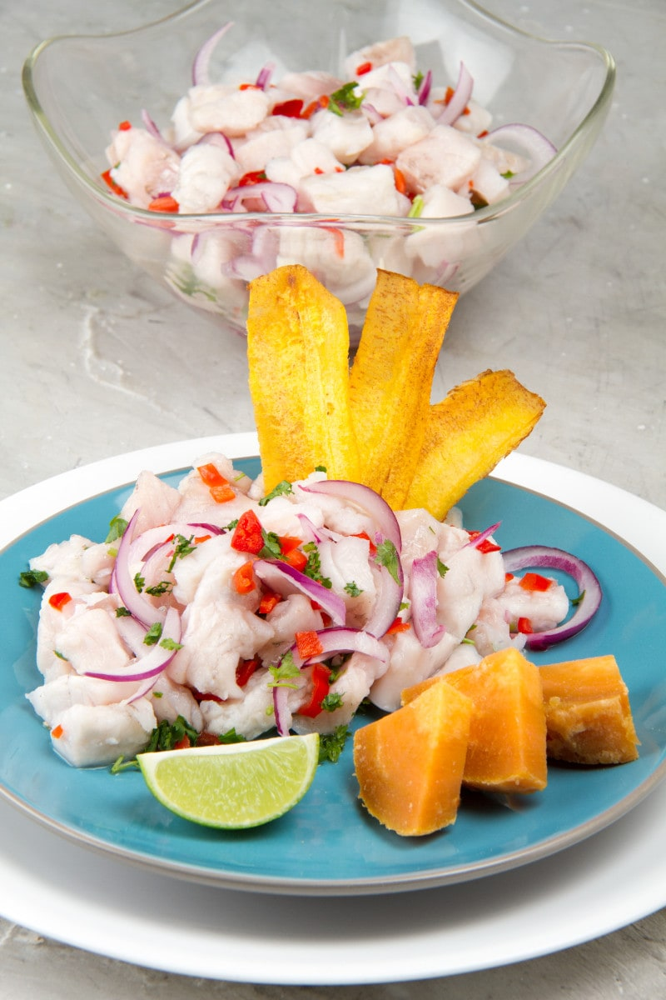

Mexican Ceviche

This is Authentic Mexican Ceviche, I've had it several times in Mexico,
and also have learned to cook Mexican food for my husband. Every time I
make this it's a hit.
Ingredients
- 5 large lemons, juiced
- 1 pound jumbo shrimp, peeled and devained
- 1/4 cup chopped fresh cilantro
- tomato and clam juice cocktail
- 2 white onions, finely chopped
- 1 cucumber, peeled and finely chopped
- 3 fresh jalapeno peppers, seeded and minced
- 1 bunch radishes, finely diced
- 2 cloves fresh garlic, minced
- tortilla chips
Directions
- Place shrimp in a bowl (You may either coarsely chop the shrimp, or leave them whole, depending on your preference.) Add lemon, covering shrimp completely. Cover, and refrigerate for 30 minutes, or until opaque and slightly firm.
- Add tomatoes, onions, cucumber, radishes, and garlic; toss to combine. Gradually add cilantro and jalapenos to desired taste (jalapeno will grow stronger while marinating). Stir in tomato and clam juices to desired consistency. Cover, and refrigerate for 1 hour. Serve chilled with tortilla chips.